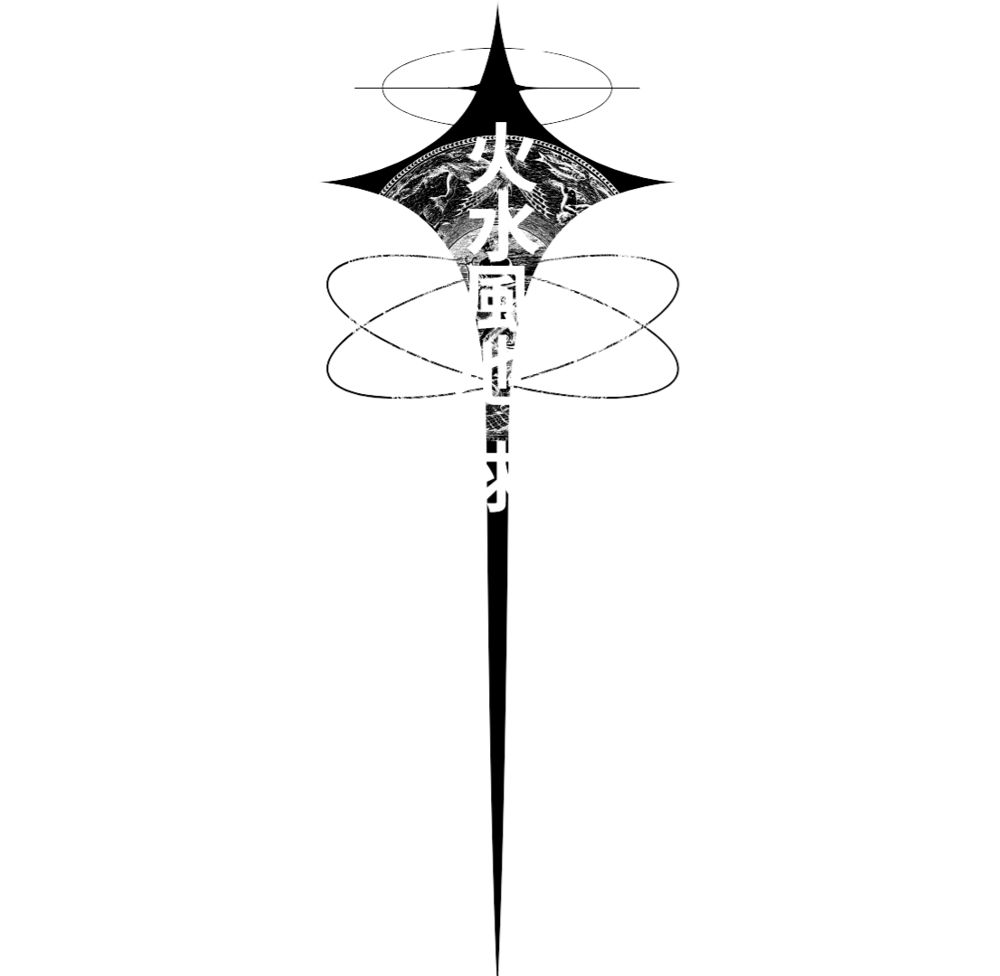

Samuel Henrique Santos da Silva
Desenvolvedor Multiplataforma com interesse em design, games e audiovisual.
Desenvolvedor Multiplataforma com interesse em design, games e audiovisual.
Olá! Meu nome é Samuel, tenho ensino médio completo e sou um desenvolvedor iniciante. Estou atualmente focado em desenvolver minhas habilidades técnicas e criativas. Tenho interesse em programação de jogos e cinematografia e busco constantemente aprender e evoluir por meio de projetos práticos.
Este portfólio foi criado para apresentar meu progresso acadêmico e pessoal, demonstrando minha dedicação, estilo e abordagem aos desafios criativos.
Email: samuel.dinamico@myyahoo.com
Instagram: @samuka.hss
GitHub: github.com/Samukashh
.jpg)
Mecha Horizon 3: Racing M — Jogo de corrida futurista com mechas, inspirado em *Armored Core*. Combate, perseguição e propulsores inspirados no SU-27 com movimentação procedural. Desenvolvimento em andamento, com foco em física de movimentação e inteligência artificial.
O OSCAR (Curta-metragem) — Curta de 20 minutos com linguagem visual e direção criativa próprias. Baseado no conto da Cinderela, envolveu desafios técnicos, liderança de equipe e edição com recursos limitados.
API cronos — desenvolver um site de monitoramento de tendências do mercado de importação e exportação no estado de São Paulo.Este projeto utiliza a metodologia Ágil SCRUM, garantindo um desenvolvimento iterativo e colaborativo, tarefas organizadas em sprints. o meu trabalho teve relação em sua maioria com com relação ao colab na primeira sprint agora estou responsalvel pelo mvp e por conectar algumas tabelas ao site
Portfólio Acadêmico — Criação de portfólio online com HTML/CSS, design responsivo e identidade visual própria. Utilizado para fins de apresentação em processos seletivos e divulgação pessoal.